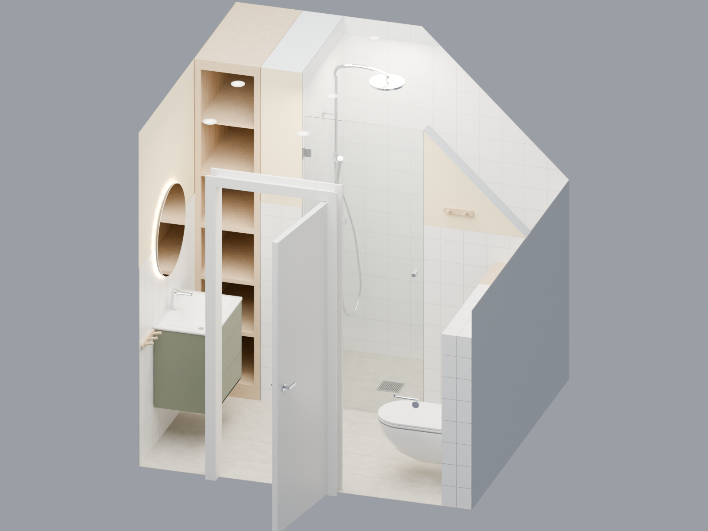
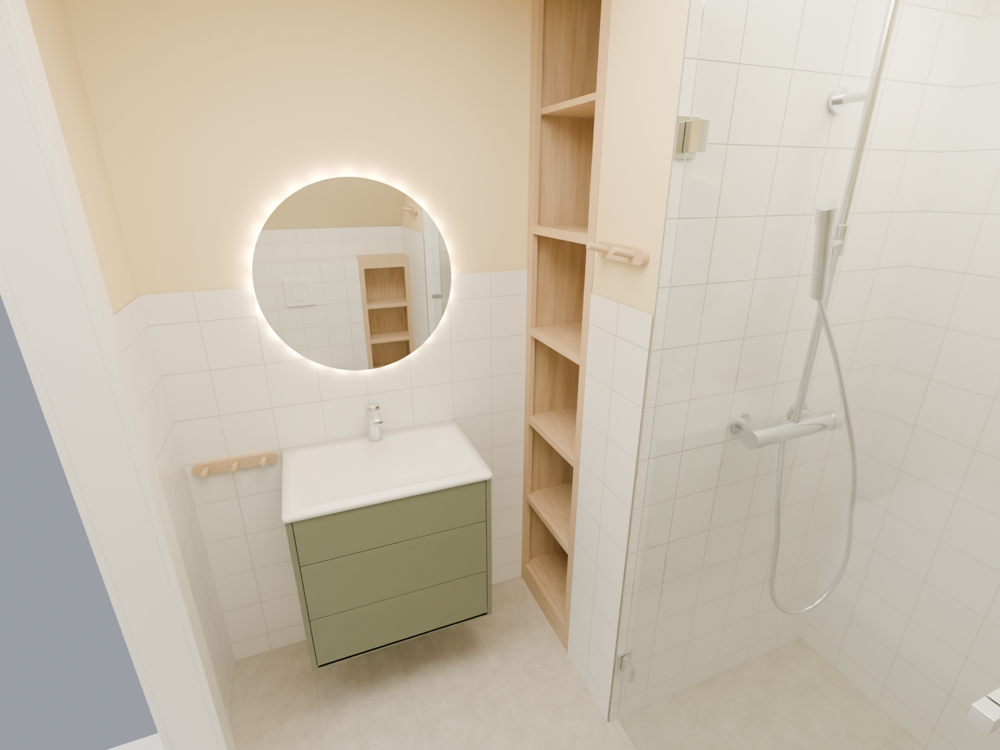
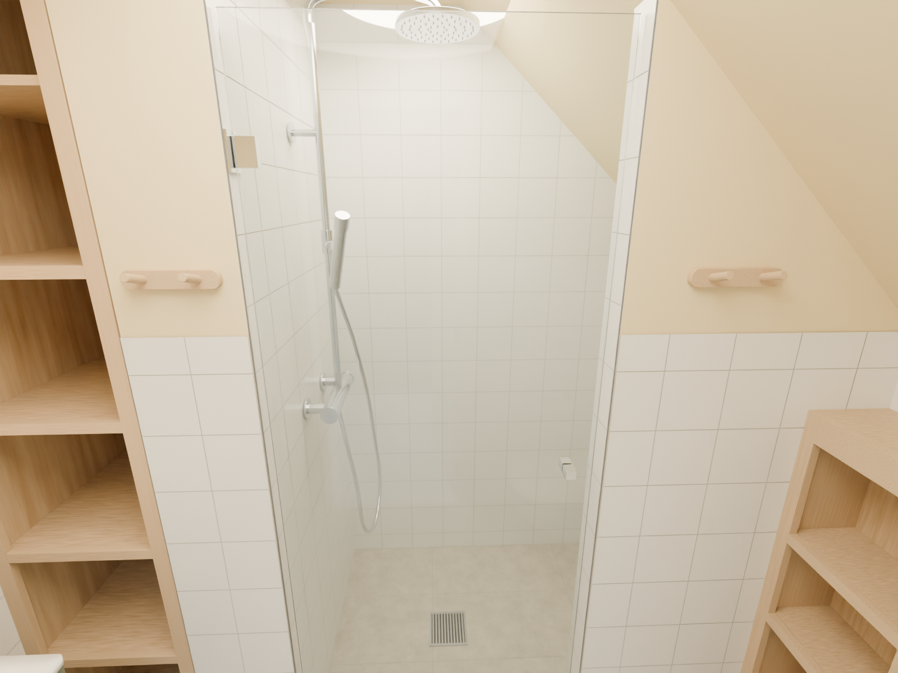
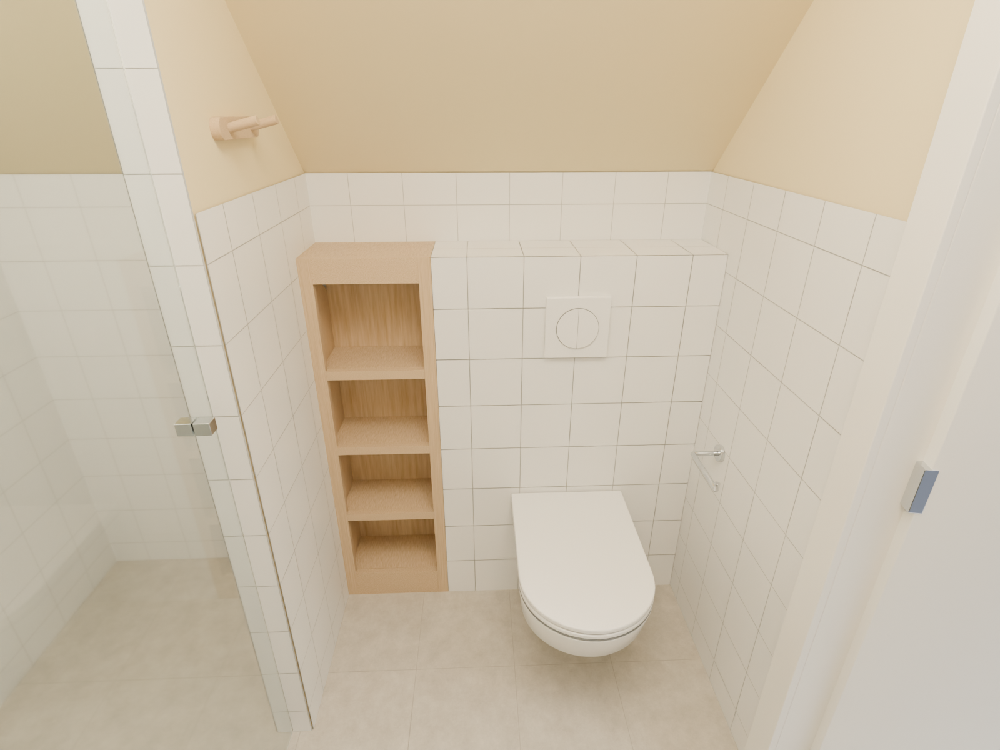
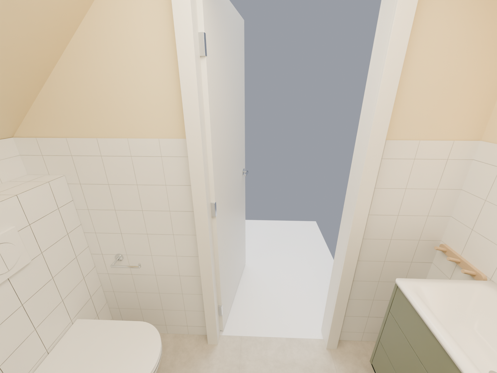
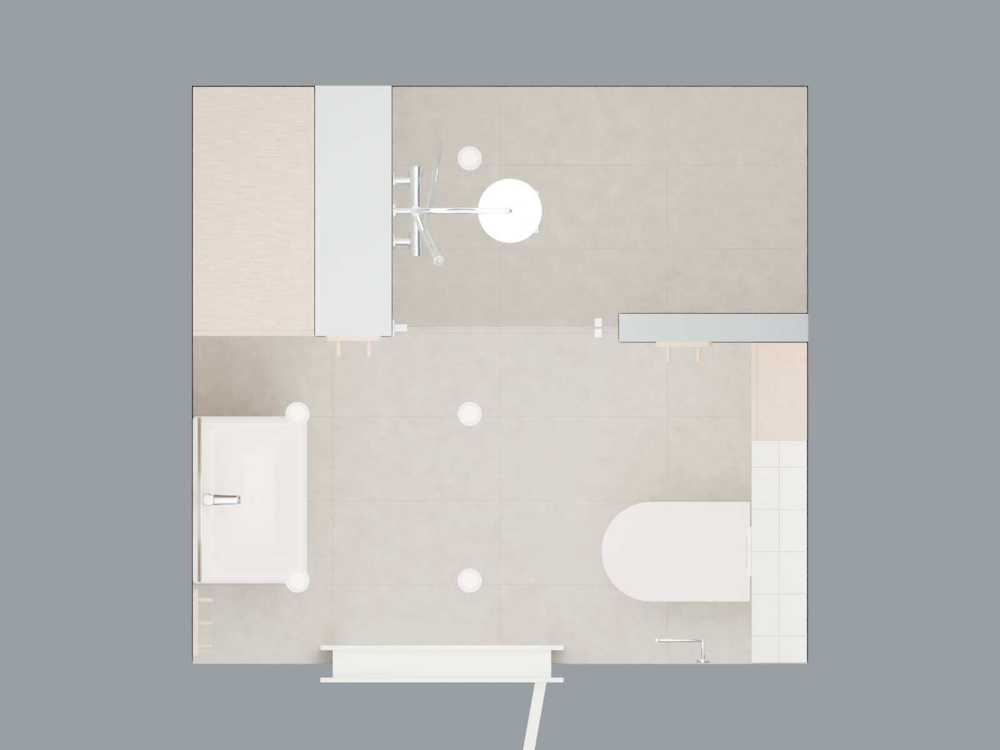
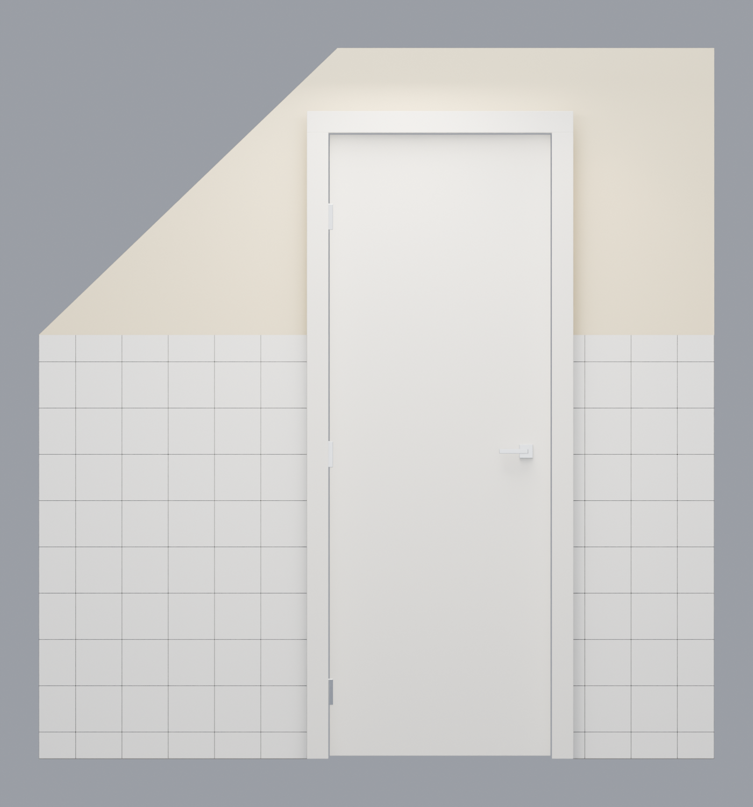
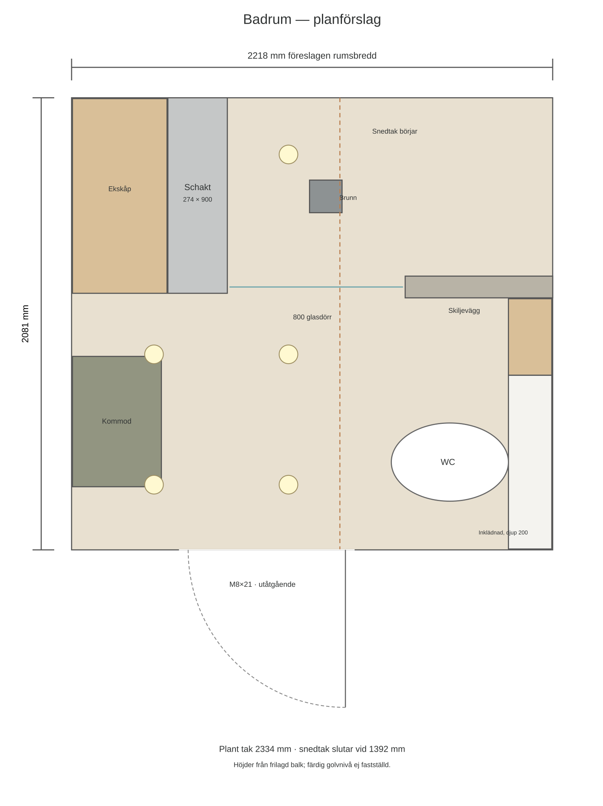

Anna & Alex Badrumsförslag · 2026
Badrum
Planförslag.
Planförslag för ett badrum på 2218 × 2081 mm. Rundvandring, inredningens placering, materialval och mått som underlag för genomgång med byggaren.
Rundvandring i badrummet
30 sekunder · Från dörren till duschen och tillbaka. Hallen visas schematiskt.
Visualiseringar.
Sju vyer av badrummet.
{kind=link}

{kind=link}

{kind=link}

{kind=link}

{kind=link}

{kind=link}

{kind=link}

Tekniska uppgifter.
Planlösning & aktuella mått
Visualiseringar som underlag för att diskutera planlösningen med byggaren. Måtten avser den aktuella modellen. Golvuppbyggnad och konstruktionsdetaljer återstår att fastställa; bilderna är inte installationsritningar.

| Del | Aktuellt förslag |
|---|---|
| Rum | 2218 B × 2081 D, efter föreslagen flytt av vänster vägg 620 mm inåt från den ursprungliga bredden 2838 mm. |
| Tak | 2334 mm vid plant tak; snedtaket börjar 1237 mm från den nya vänsterväggen och slutar på 1392 mm höjd. Takfärg: NCS S 1015-Y. |
| Höjdreferens | Höjdmåtten utgår från den frilagda balken, inte från en fastställd färdig golvnivå. |
| Schakt | 274 B × 900 D; börjar 444 mm från den nya vänsterväggen och ligger mot bakväggen. |
| Ytskikt | Beige golvplattor 600 × 300 i hela rummet. Vitt väggkakel 150 × 150 upp till 1392 mm; i duschen till full höjd. Väggar utan kakel och tak målas i NCS S 1015-Y. |
| Dörröppning | M8×21: dörrblad 725 × 2040, karm 786 × 2089, modellerad öppning 810 × 2110. Centrum 900 mm från vänster vägg; 70 mm foder. Gångjärn till höger sett från hallen; utåtgående. |
| Kommod | Tvättställ 600 × 410; underskåp 590 × 400 × 550. Tvättställets överkant 850 mm; centrerat mellan framväggen och schaktets framkant. |
| Cisterninklädnad | 800 bred × 200 djup × 1200 hög; ansluter till dörrväggen. WC-utstick 540 mm; centrum 400 mm från den kaklade dörrväggen. |
| Duschdörr | Glasdörr 800 × 2000 × 8 i modellen; gångjärn på schaktsidan. Utåtgående öppning visas i rundvandringen; beslag och fria avstånd behöver kontrolleras mot vald produkt. |
| Golvbrunn | Centrum 450 mm från färdiga väggytor på schaktsidan och bakväggen. Schematisk sil på 150 mm; golvfall är inte modellerat. |
| Belysning | Fem infällda spotlights i det plana taket, preliminärt 500 lm per armatur, 3000 K, dimbara. Ljuset i visualiseringarna är illustrativt och bygger inte på en ljusberäkning. |